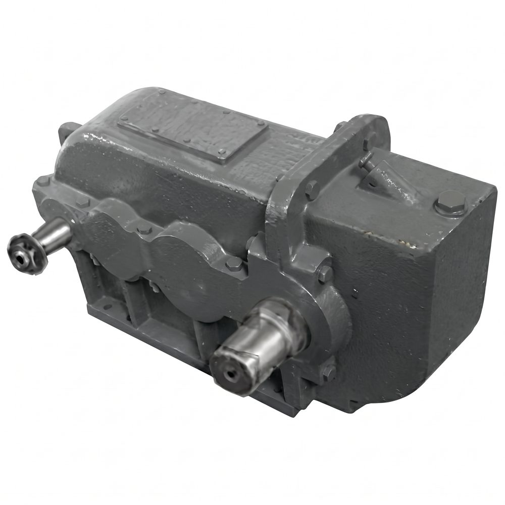
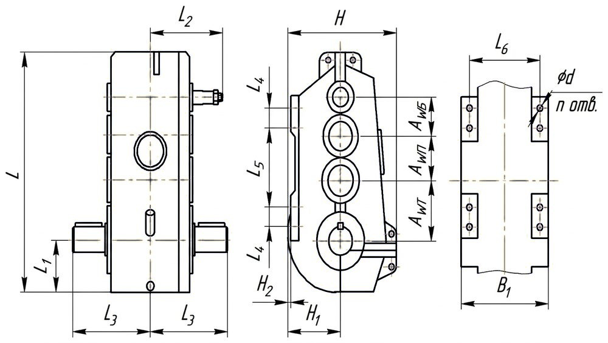
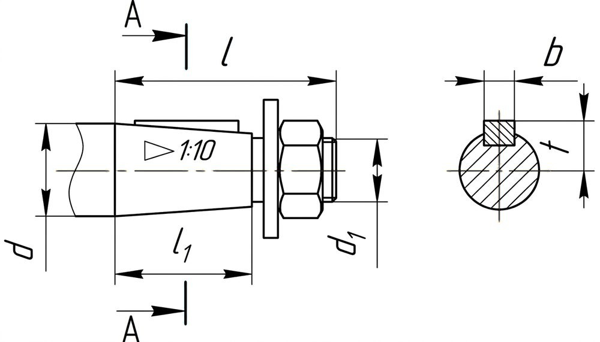
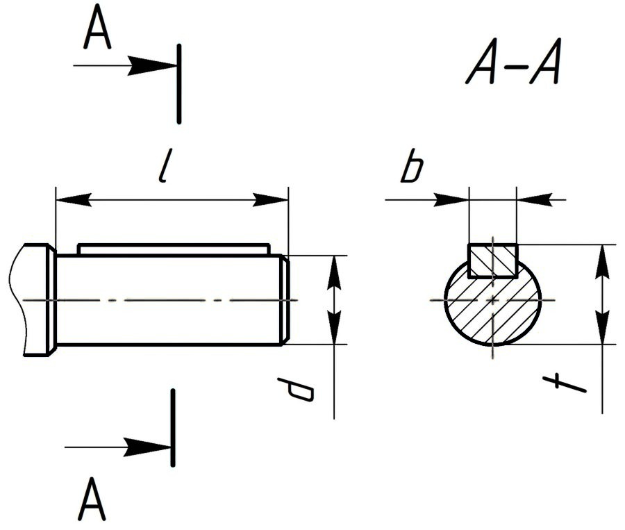

Позвонить: (4842) 75-75-05
Написать сообщение: m-40@inbox.ru
Цилиндрические вертикальные редукторы → Редуктор ВКУ 750

Редукторы цилиндрические специальные вертикальные трехступенчатые крановые усиленные, типоразмера ВКУ-750,
предназначены для эксплуатации в вертикальном и наклонном положении в приводах механизмов передвижения кранов, а так же
для увеличения крутящего момента, и уменьшения частоты вращения различных машин и механизмов.
Условное обозначение: ВКУ-750-10-13-У2
Редуктор цилиндрический трехступенчатый вертикальный, с межосевым расстоянием 750 мм
передаточным числом 10, вариантом сборки 13, климатического исполнения У категории размещения 2.
Технические характеристики редуктора ВКУ 750
Передаточные числа
18; 20; 22,4; 25; 28; 31,5; 35,5; 40; 45;
50; 56; 63; 71; 80; 90; 100; 112; 125; 140
Номинальный крутящий момент на тихоходном валу, Н·м
7 150...14 900
КПД
0,97
Масса, кг
800
Примечания:
- При работе в реверсивном режиме, т.е. при периодическом изменении направлений нагрузки
номинальные крутящие моменты на выходном валу, указанные в таблице, должны быть снижены на 30%;
- Редукторы допускают кратковременные перегрузки, возникающие при пусках и остановках
двигателя, в 2 раза превышающие номинальные нагрузки, если число циклов нагружения быстроходного вала за время действия этих перегрузок
не превысит 3·106 в течение всего срока службы редуктора;
- Номинальная радиальная нагрузка на выходном валу для вариантов сборки 13, 23, 33 и
на входном валу – для вариантов сборки 31, 32, 33 должна быть уменьшена в два раза.
Условия применения редукторов:
- Нагрузка постоянная и переменная, одного направления и реверсивная;
- Работа постоянная или с периодическими остановками;
- Вращение валов в любую сторону;
- Частота вращения входного вала не должна превышать 1800 об/мин;
- Атмосфера типов I и II по ГОСТ 15150-69 при запыленности воздуха не более 10 мг/м3;
- Климатические исполнения У, Т (для категории размещения 1…3) и климатические исполнения УХЛ и О
(для категорий размещения 4) по ГОСТ 15150-69.
Редуктор цилиндрический трехступенчатый вертикальный, с межосевым расстоянием 750 мм
передаточным числом 10, вариантом сборки 13, климатического исполнения У категории размещения 2.
Технические характеристики редуктора ВКУ 750
| Передаточные числа | 18; 20; 22,4; 25; 28; 31,5; 35,5; 40; 45; 50; 56; 63; 71; 80; 90; 100; 112; 125; 140 | |
| Номинальный крутящий момент на тихоходном валу, Н·м | 7 150...14 900 | |
| КПД | 0,97 | |
| Масса, кг | 800 | |
Примечания:
- При работе в реверсивном режиме, т.е. при периодическом изменении направлений нагрузки
номинальные крутящие моменты на выходном валу, указанные в таблице, должны быть снижены на 30%;
- Редукторы допускают кратковременные перегрузки, возникающие при пусках и остановках
двигателя, в 2 раза превышающие номинальные нагрузки, если число циклов нагружения быстроходного вала за время действия этих перегрузок
не превысит 3·106 в течение всего срока службы редуктора;
- Номинальная радиальная нагрузка на выходном валу для вариантов сборки 13, 23, 33 и
на входном валу – для вариантов сборки 31, 32, 33 должна быть уменьшена в два раза.
Условия применения редукторов:
- Нагрузка постоянная и переменная, одного направления и реверсивная;
- Работа постоянная или с периодическими остановками;
- Вращение валов в любую сторону;
- Частота вращения входного вала не должна превышать 1800 об/мин;
- Атмосфера типов I и II по ГОСТ 15150-69 при запыленности воздуха не более 10 мг/м3;
- Климатические исполнения У, Т (для категории размещения 1…3) и климатические исполнения УХЛ и О
(для категорий размещения 4) по ГОСТ 15150-69.
- При работе в реверсивном режиме, т.е. при периодическом изменении направлений нагрузки номинальные крутящие моменты на выходном валу, указанные в таблице, должны быть снижены на 30%;
- Редукторы допускают кратковременные перегрузки, возникающие при пусках и остановках двигателя, в 2 раза превышающие номинальные нагрузки, если число циклов нагружения быстроходного вала за время действия этих перегрузок не превысит 3·106 в течение всего срока службы редуктора;
- Номинальная радиальная нагрузка на выходном валу для вариантов сборки 13, 23, 33 и на входном валу – для вариантов сборки 31, 32, 33 должна быть уменьшена в два раза.
Условия применения редукторов:
- Нагрузка постоянная и переменная, одного направления и реверсивная;
- Работа постоянная или с периодическими остановками;
- Вращение валов в любую сторону;
- Частота вращения входного вала не должна превышать 1800 об/мин;
- Атмосфера типов I и II по ГОСТ 15150-69 при запыленности воздуха не более 10 мг/м3;
- Климатические исполнения У, Т (для категории размещения 1…3) и климатические исполнения УХЛ и О
(для категорий размещения 4) по ГОСТ 15150-69.
- Нагрузка постоянная и переменная, одного направления и реверсивная;
- Работа постоянная или с периодическими остановками;
- Вращение валов в любую сторону;
- Частота вращения входного вала не должна превышать 1800 об/мин;
- Атмосфера типов I и II по ГОСТ 15150-69 при запыленности воздуха не более 10 мг/м3;
- Климатические исполнения У, Т (для категории размещения 1…3) и климатические исполнения УХЛ и О (для категорий размещения 4) по ГОСТ 15150-69.

Габаритные и присоединительные размеры редуктора ВКУ 750
| AWБ | AWП | AWТ | L | L1 | L2 | L3 | L4 | L5 | L6 | H | H1 | H2 | B | B1 | d | n |
| 200 | 250 | 300 | 1 200 | 284 | 370 | 440 | 110 | 440 | 385 | 675 | 290 | - | 435 | 445 | 26 | 8 |

Размеры быстроходного конического вала редуктора ВКУ 750
| d | d1 | l | l1 | b | t |
| 50 | М36×3 | 110 | 85 | 12 | 26 |

Размеры тихоходного цилиндрического вала редуктора ВКУ 750
| d | l | b | t |
| 125 | 165 | 32 | 136 |
Варианты сборки редуктора ВКУ 750
 |
 |
 |
 |
 |
 |
 |
 |
 |
Узнать цену редуктора ВКУ 750 Вы можете здесь, или по телефону:
(4842) 75-75-05
Условное обозначение исполнений редукторов типа ВКУ 750
Передаточное отношение 18,0
ВКУ-750-18-11
ВКУ-750-18-12
ВКУ-750-18-13
ВКУ-750-18-21
ВКУ-750-18-22
ВКУ-750-18-23
ВКУ-750-18-31
ВКУ-750-18-32
ВКУ-750-18-33
Передаточное отношение 20,0
ВКУ-750-20-11
ВКУ-750-20-12
ВКУ-750-20-13
ВКУ-750-20-21
ВКУ-750-20-22
ВКУ-750-20-23
ВКУ-750-20-31
ВКУ-750-20-32
ВКУ-750-20-33
Передаточное отношение 22,4
ВКУ-750-22,4-11
ВКУ-750-22,4-12
ВКУ-750-22,4-13
ВКУ-750-22,4-21
ВКУ-750-22,4-22
ВКУ-750-22,4-23
ВКУ-750-22,4-31
ВКУ-750-22,4-32
ВКУ-750-22,4-33
Передаточное отношение 25,0
ВКУ-750-25-11
ВКУ-750-25-12
ВКУ-750-25-13
ВКУ-750-25-21
ВКУ-750-25-22
ВКУ-750-25-23
ВКУ-750-25-31
ВКУ-750-25-32
ВКУ-750-25-33
Передаточное отношение 28,0
ВКУ-750-28-11
ВКУ-750-28-12
ВКУ-750-28-13
ВКУ-750-28-21
ВКУ-750-28-22
ВКУ-750-28-23
ВКУ-750-28-31
ВКУ-750-28-32
ВКУ-750-28-33
Передаточное отношение 31,5
ВКУ-750-31,5-11
ВКУ-750-31,5-12
ВКУ-750-31,5-13
ВКУ-750-31,5-21
ВКУ-750-31,5-22
ВКУ-750-31,5-23
ВКУ-750-31,5-31
ВКУ-750-31,5-32
ВКУ-750-31,5-33
Передаточное отношение 35,5
ВКУ-750-35,5-11
ВКУ-750-35,5-12
ВКУ-750-35,5-13
ВКУ-750-35,5-21
ВКУ-750-35,5-22
ВКУ-750-35,5-23
ВКУ-750-35,5-31
ВКУ-750-35,5-32
ВКУ-750-35,5-33
Передаточное отношение 40,0
ВКУ-750-40-11
ВКУ-750-40-12
ВКУ-750-40-13
ВКУ-750-40-21
ВКУ-750-40-22
ВКУ-750-40-23
ВКУ-750-40-31
ВКУ-750-40-32
ВКУ-750-40-33
Передаточное отношение 45,0
ВКУ-750-45-11
ВКУ-750-45-12
ВКУ-750-45-13
ВКУ-750-45-21
ВКУ-750-45-22
ВКУ-750-45-23
ВКУ-750-45-31
ВКУ-750-45-32
ВКУ-750-45-33
Передаточное отношение 50,0
ВКУ-750-50-11
ВКУ-750-50-12
ВКУ-750-50-13
ВКУ-750-50-21
ВКУ-750-50-22
ВКУ-750-50-23
ВКУ-750-50-31
ВКУ-750-50-32
ВКУ-750-50-33
Передаточное отношение 56,0
ВКУ-756-56-11
ВКУ-756-56-12
ВКУ-756-56-13
ВКУ-756-56-21
ВКУ-756-56-22
ВКУ-756-56-23
ВКУ-756-56-31
ВКУ-756-56-32
ВКУ-756-56-33
Передаточное отношение 63,0
ВКУ-763-63-11
ВКУ-763-63-12
ВКУ-763-63-13
ВКУ-763-63-21
ВКУ-763-63-22
ВКУ-763-63-23
ВКУ-763-63-31
ВКУ-763-63-32
ВКУ-763-63-33
Передаточное отношение 71,0
ВКУ-750-71-11
ВКУ-750-71-12
ВКУ-750-71-13
ВКУ-750-71-21
ВКУ-750-71-22
ВКУ-750-71-23
ВКУ-750-71-31
ВКУ-750-71-32
ВКУ-750-71-33
Передаточное отношение 80,0
ВКУ-750-80-11
ВКУ-750-80-12
ВКУ-750-80-13
ВКУ-750-80-21
ВКУ-750-80-22
ВКУ-750-80-23
ВКУ-750-80-31
ВКУ-750-80-32
ВКУ-750-80-33
Передаточное отношение 90,0
ВКУ-750-90-11
ВКУ-750-90-12
ВКУ-750-90-13
ВКУ-750-90-21
ВКУ-750-90-22
ВКУ-750-90-23
ВКУ-750-90-31
ВКУ-750-90-32
ВКУ-750-90-33
Передаточное отношение 100,0
ВКУ-750-100-11
ВКУ-750-100-12
ВКУ-750-100-13
ВКУ-750-100-21
ВКУ-750-100-22
ВКУ-750-100-23
ВКУ-750-100-31
ВКУ-750-100-32
ВКУ-750-100-33
Передаточное отношение 112,0
ВКУ-750-112-11
ВКУ-750-112-12
ВКУ-750-112-13
ВКУ-750-112-21
ВКУ-750-112-22
ВКУ-750-112-23
ВКУ-750-112-31
ВКУ-750-112-32
ВКУ-750-112-33
Передаточное отношение 125,0
ВКУ-750-125-11
ВКУ-750-125-12
ВКУ-750-125-13
ВКУ-750-125-21
ВКУ-750-125-22
ВКУ-750-125-23
ВКУ-750-125-31
ВКУ-750-125-32
ВКУ-750-125-33
Передаточное отношение 140,0
ВКУ-750-140-11
ВКУ-750-140-12
ВКУ-750-140-13
ВКУ-750-140-21
ВКУ-750-140-22
ВКУ-750-140-23
ВКУ-750-140-31
ВКУ-750-140-32
ВКУ-750-140-33
Перечень запасных частей редукторов типа ВКУ 750
Наименование детали
Число зубьев
Обозначение
Значение
Быстроходный вал-шестерня
z1
31
17
16
15
Колесо первой ступени
z2
68
82
83
84
Вал-шестерня второй ступени
z3
30
28
26
24
22
20
18
17
16
15
14
13
Колесо второй ступени
z4
69
71
73
75
77
79
81
82
83
84
85
86
Вал-шестерня третьей ступени
z5
19
Колесо третьей ступени (тихоходное)
z6
70
Редуктор ВКУ 750 неоднократно модернизировался различными заводами СССР. В связи с чем, детали одинаковых по маркировке редукторов могут
отличаться между собой и не быть взаимозаменяемыми.
Характеристики зубчатых передач редукторов ВКУ 750 различных заводов-изготовителей могут отличаться между собой по модулю и количеству зубьев при
идентичных передаточных числах.
При размещении заказа в ООО «ЦКК» без предоставления чертежей деталей, ответственность за несоответствие деталей несет Покупатель.
Узнать цену на запасные части к редуктору ВКУ 750 Вы можете здесь, или по телефону:
(4842) 75-75-05
Условное обозначение исполнений редукторов типа ВКУ 750
| Передаточное отношение 18,0 | ||
| ВКУ-750-18-11 | ВКУ-750-18-12 | ВКУ-750-18-13 |
| ВКУ-750-18-21 | ВКУ-750-18-22 | ВКУ-750-18-23 |
| ВКУ-750-18-31 | ВКУ-750-18-32 | ВКУ-750-18-33 |
| Передаточное отношение 20,0 | ||
| ВКУ-750-20-11 | ВКУ-750-20-12 | ВКУ-750-20-13 |
| ВКУ-750-20-21 | ВКУ-750-20-22 | ВКУ-750-20-23 |
| ВКУ-750-20-31 | ВКУ-750-20-32 | ВКУ-750-20-33 |
| Передаточное отношение 22,4 | ||
| ВКУ-750-22,4-11 | ВКУ-750-22,4-12 | ВКУ-750-22,4-13 |
| ВКУ-750-22,4-21 | ВКУ-750-22,4-22 | ВКУ-750-22,4-23 |
| ВКУ-750-22,4-31 | ВКУ-750-22,4-32 | ВКУ-750-22,4-33 |
| Передаточное отношение 25,0 | ||
| ВКУ-750-25-11 | ВКУ-750-25-12 | ВКУ-750-25-13 |
| ВКУ-750-25-21 | ВКУ-750-25-22 | ВКУ-750-25-23 |
| ВКУ-750-25-31 | ВКУ-750-25-32 | ВКУ-750-25-33 |
| Передаточное отношение 28,0 | ||
| ВКУ-750-28-11 | ВКУ-750-28-12 | ВКУ-750-28-13 |
| ВКУ-750-28-21 | ВКУ-750-28-22 | ВКУ-750-28-23 |
| ВКУ-750-28-31 | ВКУ-750-28-32 | ВКУ-750-28-33 |
| Передаточное отношение 31,5 | ||
| ВКУ-750-31,5-11 | ВКУ-750-31,5-12 | ВКУ-750-31,5-13 |
| ВКУ-750-31,5-21 | ВКУ-750-31,5-22 | ВКУ-750-31,5-23 |
| ВКУ-750-31,5-31 | ВКУ-750-31,5-32 | ВКУ-750-31,5-33 |
| Передаточное отношение 35,5 | ||
| ВКУ-750-35,5-11 | ВКУ-750-35,5-12 | ВКУ-750-35,5-13 |
| ВКУ-750-35,5-21 | ВКУ-750-35,5-22 | ВКУ-750-35,5-23 |
| ВКУ-750-35,5-31 | ВКУ-750-35,5-32 | ВКУ-750-35,5-33 |
| Передаточное отношение 40,0 | ||
| ВКУ-750-40-11 | ВКУ-750-40-12 | ВКУ-750-40-13 |
| ВКУ-750-40-21 | ВКУ-750-40-22 | ВКУ-750-40-23 |
| ВКУ-750-40-31 | ВКУ-750-40-32 | ВКУ-750-40-33 |
| Передаточное отношение 45,0 | ||
| ВКУ-750-45-11 | ВКУ-750-45-12 | ВКУ-750-45-13 |
| ВКУ-750-45-21 | ВКУ-750-45-22 | ВКУ-750-45-23 |
| ВКУ-750-45-31 | ВКУ-750-45-32 | ВКУ-750-45-33 |
| Передаточное отношение 50,0 | ||
| ВКУ-750-50-11 | ВКУ-750-50-12 | ВКУ-750-50-13 |
| ВКУ-750-50-21 | ВКУ-750-50-22 | ВКУ-750-50-23 |
| ВКУ-750-50-31 | ВКУ-750-50-32 | ВКУ-750-50-33 |
| Передаточное отношение 56,0 | ||
| ВКУ-756-56-11 | ВКУ-756-56-12 | ВКУ-756-56-13 |
| ВКУ-756-56-21 | ВКУ-756-56-22 | ВКУ-756-56-23 |
| ВКУ-756-56-31 | ВКУ-756-56-32 | ВКУ-756-56-33 |
| Передаточное отношение 63,0 | ||
| ВКУ-763-63-11 | ВКУ-763-63-12 | ВКУ-763-63-13 |
| ВКУ-763-63-21 | ВКУ-763-63-22 | ВКУ-763-63-23 |
| ВКУ-763-63-31 | ВКУ-763-63-32 | ВКУ-763-63-33 |
| Передаточное отношение 71,0 | ||
| ВКУ-750-71-11 | ВКУ-750-71-12 | ВКУ-750-71-13 |
| ВКУ-750-71-21 | ВКУ-750-71-22 | ВКУ-750-71-23 |
| ВКУ-750-71-31 | ВКУ-750-71-32 | ВКУ-750-71-33 |
| Передаточное отношение 80,0 | ||
| ВКУ-750-80-11 | ВКУ-750-80-12 | ВКУ-750-80-13 |
| ВКУ-750-80-21 | ВКУ-750-80-22 | ВКУ-750-80-23 |
| ВКУ-750-80-31 | ВКУ-750-80-32 | ВКУ-750-80-33 |
| Передаточное отношение 90,0 | ||
| ВКУ-750-90-11 | ВКУ-750-90-12 | ВКУ-750-90-13 |
| ВКУ-750-90-21 | ВКУ-750-90-22 | ВКУ-750-90-23 |
| ВКУ-750-90-31 | ВКУ-750-90-32 | ВКУ-750-90-33 |
| Передаточное отношение 100,0 | ||
| ВКУ-750-100-11 | ВКУ-750-100-12 | ВКУ-750-100-13 |
| ВКУ-750-100-21 | ВКУ-750-100-22 | ВКУ-750-100-23 |
| ВКУ-750-100-31 | ВКУ-750-100-32 | ВКУ-750-100-33 |
| Передаточное отношение 112,0 | ||
| ВКУ-750-112-11 | ВКУ-750-112-12 | ВКУ-750-112-13 |
| ВКУ-750-112-21 | ВКУ-750-112-22 | ВКУ-750-112-23 |
| ВКУ-750-112-31 | ВКУ-750-112-32 | ВКУ-750-112-33 |
| Передаточное отношение 125,0 | ||
| ВКУ-750-125-11 | ВКУ-750-125-12 | ВКУ-750-125-13 |
| ВКУ-750-125-21 | ВКУ-750-125-22 | ВКУ-750-125-23 |
| ВКУ-750-125-31 | ВКУ-750-125-32 | ВКУ-750-125-33 |
| Передаточное отношение 140,0 | ||
| ВКУ-750-140-11 | ВКУ-750-140-12 | ВКУ-750-140-13 |
| ВКУ-750-140-21 | ВКУ-750-140-22 | ВКУ-750-140-23 |
| ВКУ-750-140-31 | ВКУ-750-140-32 | ВКУ-750-140-33 |
Перечень запасных частей редукторов типа ВКУ 750
| Наименование детали | Число зубьев | |
| Обозначение | Значение | |
| Быстроходный вал-шестерня | z1 | 31 |
| 17 | ||
| 16 | ||
| 15 | ||
| Колесо первой ступени | z2 | 68 |
| 82 | ||
| 83 | ||
| 84 | ||
| Вал-шестерня второй ступени | z3 | 30 |
| 28 | ||
| 26 | ||
| 24 | ||
| 22 | ||
| 20 | ||
| 18 | ||
| 17 | ||
| 16 | ||
| 15 | ||
| 14 | ||
| 13 | ||
| Колесо второй ступени | z4 | 69 |
| 71 | ||
| 73 | ||
| 75 | ||
| 77 | ||
| 79 | ||
| 81 | ||
| 82 | ||
| 83 | ||
| 84 | ||
| 85 | ||
| 86 | ||
| Вал-шестерня третьей ступени | z5 | 19 |
| Колесо третьей ступени (тихоходное) | z6 | 70 |
Характеристики зубчатых передач редукторов ВКУ 750 различных заводов-изготовителей могут отличаться между собой по модулю и количеству зубьев при идентичных передаточных числах.
При размещении заказа в ООО «ЦКК» без предоставления чертежей деталей, ответственность за несоответствие деталей несет Покупатель.